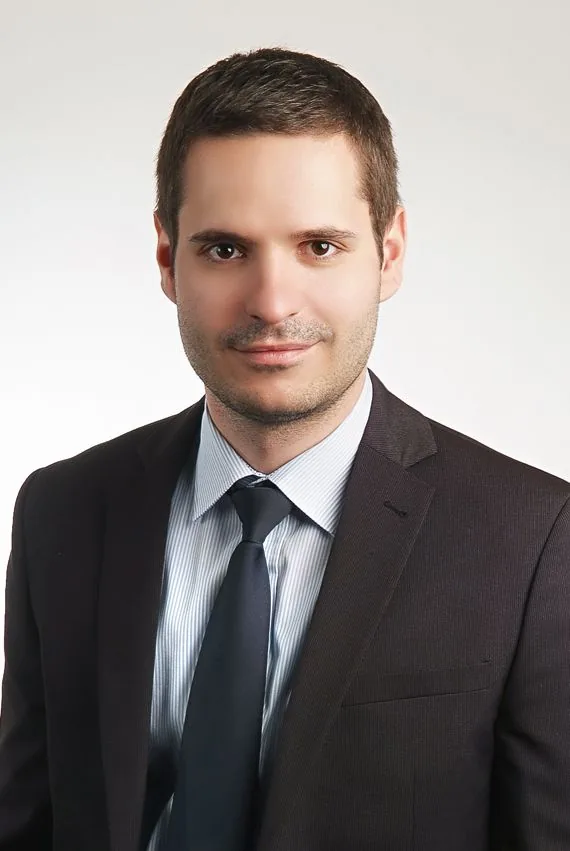
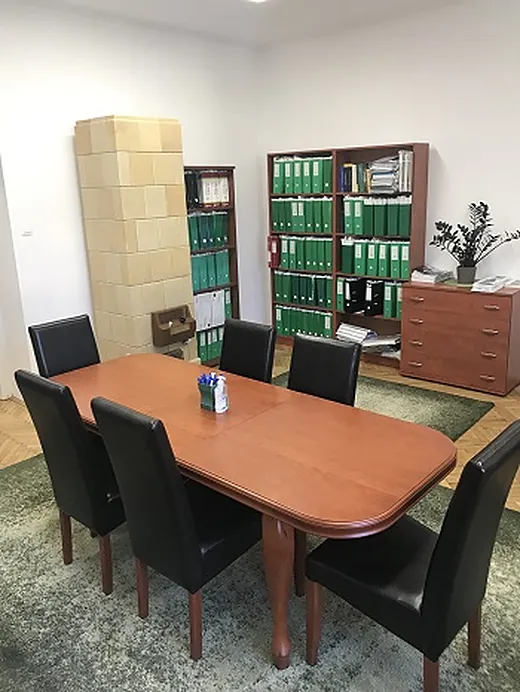
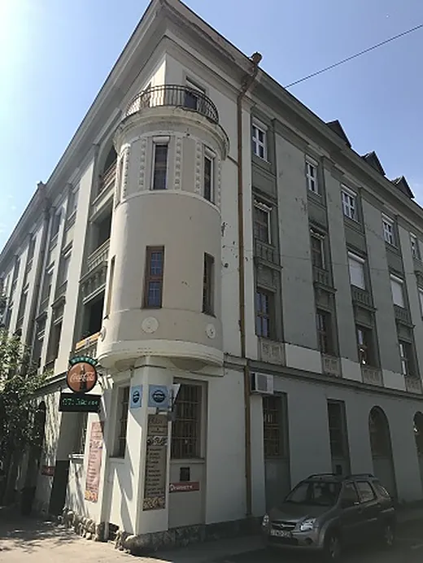

Ingatlan vagy termőföld adásvétele
Amit vállalok
Mit hozzon magával?
A pontos díjat az ügy ismeretében mondom meg, és a megbízási szerződésben írásban rögzítjük.
Ezzel az üggyel kérek visszahívástÜgyvédi iroda a pécsi Búza téren
Szerződések és ingatlanügyek, cégügyintézés, családjogi és kártérítési ügyek, követelésbehajtás, védelem büntetőügyben. Magánszemélyeknek és vállalkozásoknak.

A klasszikus ügyvédi munkától – szerződés, okirat, cégügy – a bírósági képviseletig. Ha nem találja a saját ügyét a listában, hívjon, és megmondom, tudok-e segíteni.
Mennyibe kerül? DíjkalauzHa lakást vesz, válik, örököl, kár érte, vagy eljárás indult Ön ellen.
Gazdasági társaságoknak, mezőgazdasági, kereskedelmi és szállodaipari vállalkozásoknak.
Megmutatom, hogyan számolom a munkadíjat az Ön ügyében, mit vállalok benne, és mit érdemes elhoznia az első megbeszélésre.
A pontos díjat az ügy ismeretében mondom meg, és a megbízási szerződésben írásban rögzítjük.
Ezzel az üggyel kérek visszahívást

A Pécsi Tudományegyetem Állam- és Jogtudományi Karán Köztársasági ösztöndíjasként, summa cum laude minősítéssel, évfolyamelsőként szereztem meg a jogi diplomámat. Az ügyvédjelölti évek után a jogi szakvizsgát kitűnő eredménnyel tettem le.
Több éve látom el ügyfeleim jogi képviseletét Pécsen. Rendszeresen dolgozom gazdasági társaságoknak, mezőgazdasági, kereskedelmi és szállodaipari vállalkozásoknak, és évekig láttam el egy helyi hitelintézet jogi képviseletét is.
A szakmai felkészültség mellett ugyanolyan fontosnak tartom a kölcsönös tiszteleten alapuló személyes kapcsolatot ügyfeleimmel.
Nem kell részleteznie az ügyét. Elég a neve, a telefonszáma és az ügy típusa, a többit telefonon megbeszéljük.
Ha a kérdésére nem talál választ, hívjon: 06 30 405 7979.
Az ügy fajtájától függ. Okiratok szerkesztésénél a munkadíj jellemzően százalékos, cégalapításnál és cégmódosításnál fix összeg, más ügyekben – például büntetőügyben, polgári perben vagy munkaügyben – az ügy bonyolultságához és a munka mennyiségéhez igazodik.
Pécs belvárosában, a Búza tér 8. szám alatt, az E. lépcsőház 1. emelet 3. ajtónál. Postacím: 7603 Pécs, Pf. 36.
Hétfőtől péntekig 9 és 18 óra között, a 06 30 405 7979-es mobilszámon vagy e-mailben a drgalambos.gergely@gmail.com címen.
Igen. Büntető- és szabálysértési eljárásban védőként, és a bűncselekmény sértettjének jogi képviselőjeként is eljárok.
Igen. Cégalapítás és cégmódosítás, kintlévőségek behajtása, fizetési meghagyás, csőd- és felszámolási eljárás, munkaszerződések és munkaügyi viták tartoznak a mindennapi munkámhoz.
Igen, a Magyar Ügyvédek Biztosító és Segélyező Egyesületénél rendelkezem felelősségbiztosítással.
Ezt a honlapot Dr. Galambos Gergely, a Pécsi Ügyvédi Kamarában bejegyzett ügyvéd tartja fenn az ügyvédekre vonatkozó jogszabályok és belső szabályzatok szerint. Az itt olvasható tartalom nem minősül jogi értelemben vett ajánlattételnek, sem ajánlattételre történő felhívásnak. [Ide kerül a Pécsi Ügyvédi Kamara által jóváhagyott egységes szövegű tájékoztatás.]
Az ügyféljogokra vonatkozó tájékoztatás és a kamarai szabályzatok: Pécsi Ügyvédi Kamara · Magyar Ügyvédi Kamara. Felelősségbiztosítás: Magyar Ügyvédek Biztosító és Segélyező Egyesülete.